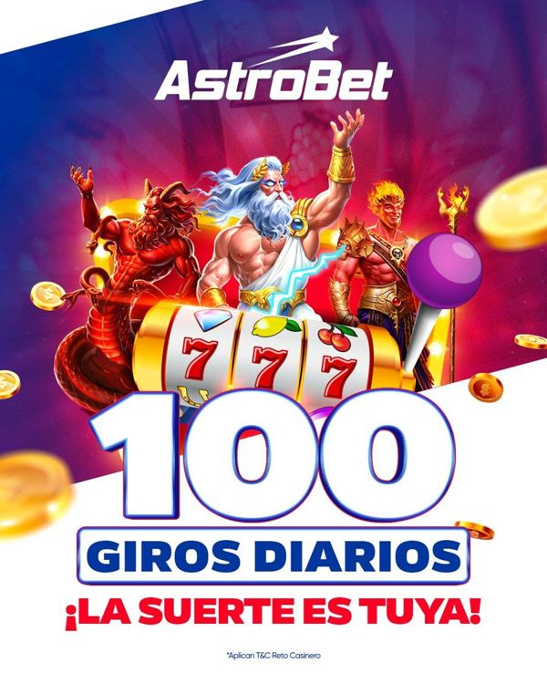
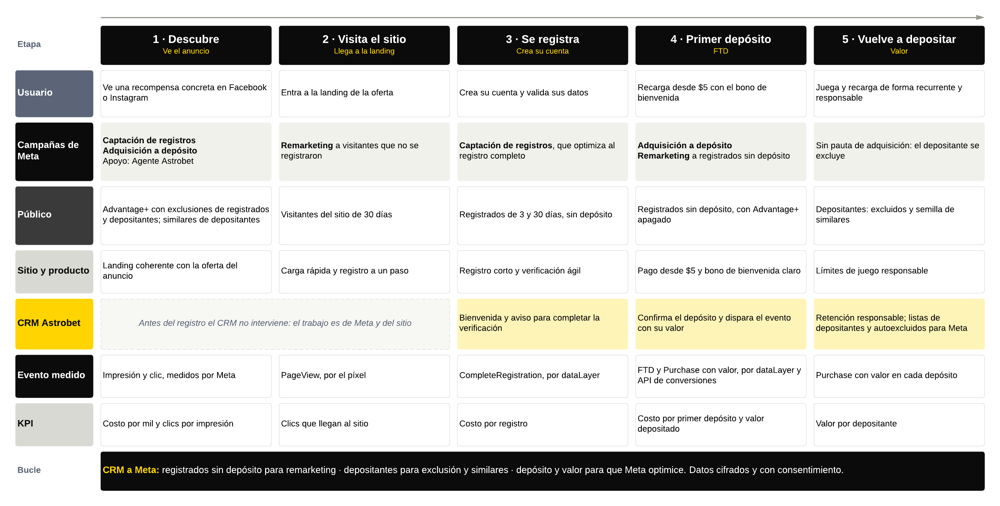
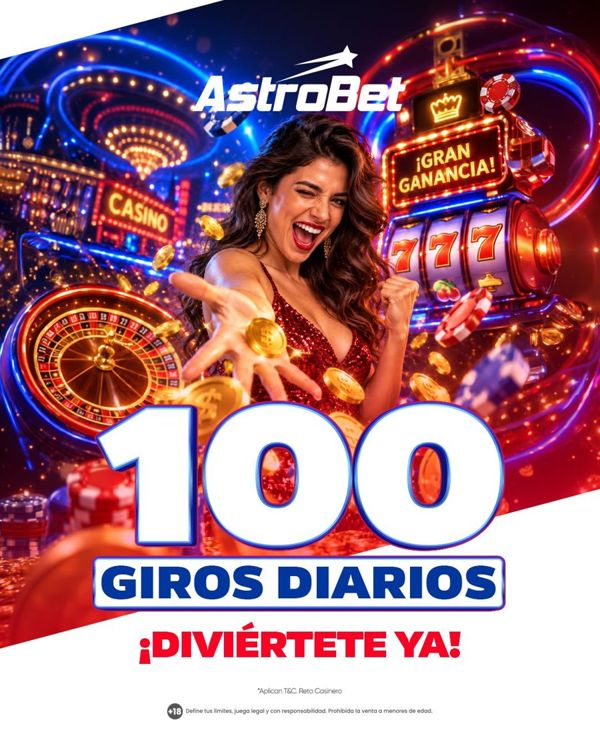
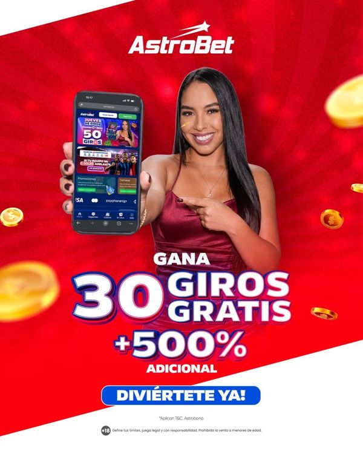

Para captación, recompensa recurrente
RETO
100 giros diarios. La pieza que más escaló; se encarece desde agosto y pide una familia nueva.
índice55por registroUSD 1,86registros9.964
En 2026 Meta bajó el costo del registro de Astrobet a un cuarto y multiplicó los registros por trece. El siguiente paso es que la cuenta trabaje para el depósito: una estructura con captación, depósito y remarketing, públicos que separan a quien ya se registró de quien todavía no, y un evento de primer depósito que Meta pueda usar para optimizar.
Cifras de la cuenta completa, en USD a 3.400 COP por dólar. El costo por registro divide toda la inversión de la cuenta entre los registros que mide Meta.
De USD 6,38 en febrero a USD 1,67 en julio. En septiembre y octubre se sostiene entre USD 2,31 y 2,40, menos de la mitad que a inicio de año.
Costo por registroDe 201 en enero a 2.659 en julio. Después del Mundial la cuenta mantiene un piso de unos 1.700 al mes, más de ocho veces enero.
VolumenEntre abril y julio los registros subieron 82% con 6% más de inversión. La mejora vino del aprendizaje de las campañas y de la creatividad.
EficienciaPromociones concentra el 88% de la inversión y trajo 12.965 registros a USD 2,31. En los últimos 30 días su costo por registro bajó a USD 1,97.
PromocionesLa recompensa recurrente, como los 100 giros diarios, trajo el 87% de los registros y costó 46% menos que el resto de la cuenta en sus mismos meses.
Índice 54Según Google Analytics, los usuarios con depósito que llegaron por Meta pasaron de 9 al mes en enero a 30 en septiembre, con un máximo de 50 en mayo.
La siguiente etapaLa inversión mensual se estabilizó desde abril entre USD 3.900 y 4.500. Lo que cambió fue cuánto rinde cada dólar.
Agosto y septiembre cerraron con unos 1.700 registros al mes. El reto ya no es conseguir registros baratos: es que una parte mayor de ellos deposite.
Todas las campañas de captación optimizan al registro completo, y por eso el costo bajó tanto. Para que baje el costo del depósito, Meta tiene que poder ver y optimizar el depósito.
Estructura activa leída de la cuenta el 12 de octubre de 2026. La inversión es la de los últimos 30 días.
| Campaña | Trabajo | Evento que optimiza | Público | Atribución | Inversión, 30 días |
|---|---|---|---|---|---|
| Promociones | Captación, con cuatro conjuntos activos, uno por oferta | Registro completo | Advantage+ con intereses de deportes y apuestas, Ecuador, 18 años o más, sin exclusiones | 1 día tras clic | USD 3.538, 83% |
| Remarketing - Depósitos | Llevar al primer depósito | Evento personalizado FTD | Lista «RETARGETING» de 10.000 a 12.000 personas, con Advantage+ activo | 1 día tras clic | USD 445, 10% |
| Agente Astrobet | Captar agentes | Clics en el enlace | Amplio, Ecuador | 1 día tras clic | USD 265, 6% |
| Casino, Sportsbook y Seguidores | Pruebas de producto y comunidad | - | - | - | En pausa |
Toda la captación optimiza al registro completo. Meta busca a quien se registra, no a quien deposita: el depósito llega solo si el registrado decide hacerlo después.
En las últimas 24 horas el píxel registró 360 registros y 567 depósitos, pero el evento FTD se disparó 6 veces. En todo el año Meta atribuyó al remarketing 12 eventos personalizados de depósito: no hay señal para aprender, y Meta necesita del orden de 50 por semana en cada conjunto.
Con Advantage+ activo, la lista «RETARGETING» funciona como sugerencia y Meta puede mostrar los anuncios fuera de ella. En remarketing la lista debe ser un límite.
La cuenta tiene dos listas cargadas a mano y ningún público de visitantes, registrados o depositantes, ni similares. La captación no excluye a quien ya se registró o depositó, así que parte de la inversión puede volver sobre clientes.
La captación de registros sigue siendo el motor. Se suman una campaña que busca el depósito desde el primer contacto y un remarketing que solo habla con quien ya conoce la marca.
| Campaña | Evento que optimiza | Público | Creatividad | KPI |
|---|---|---|---|---|
| Captación de registros | Registro completo | Advantage+ con controles: Ecuador, 18 años o más, sin registrados, depositantes ni autoexcluidos | Recompensa recurrente, con una familia nueva | Costo por registro |
| Adquisición a depósito, nueva | Todos los depósitos con valor al inicio; primer depósito cuando tenga volumen | Advantage+ con similares de depositantes como sugerencia y depositantes excluidos | Bono de primera recarga con una creadora, «recarga desde $5» | Costo por primer depósito y valor depositado |
| Remarketing a depósito | Primer depósito | Solo registrados sin depósito y visitantes de 30 días, con Advantage+ apagado | Bono de primera recarga como recordatorio | Costo por primer depósito |
| Apoyo: Agente Astrobet | Clics en el enlace | Amplio, Ecuador | Captación de agentes | Costo por clic |
En los últimos 30 días Meta atribuyó unos 200 eventos de depósito a toda la cuenta. Alcanza para que un conjunto aprenda, no varios. Por eso el depósito arranca en un conjunto, sin dividir por oferta, y con la campaña en objetivo Ventas para poder optimizar por valor más adelante.
El reparto se revisa cada mes y se mueve como máximo un 15% por vez, para no reiniciar el aprendizaje de las campañas. La meta de costo por primer depósito se fija con cuatro semanas de datos limpios.
Meta es el único canal, así que el trabajo se reparte entre campañas: qué queremos de cada una, qué acciones pueden funcionar y por qué es la campaña indicada para ese tramo del journey.
Actúa en el journey: 1. Descubre, 2. Visita el sitio y 3. Se registra
Mantener el volumen de registros, unos 1.700 al mes, a un costo cercano al actual (USD 1,97 en los últimos 30 días) y pagando solo por personas nuevas.
KPI: costo por registro y proporción de registros que llegan a depósito.
Excluir registrados, depositantes y autoexcluidos.
Consolidar los cuatro conjuntos en uno o dos, con las ofertas como anuncios.
Abrir una familia nueva de recompensa recurrente.
Excluir Audience Network en su formato clásico.
Rotar piezas cuando suba la frecuencia, hoy 4,7 en 30 días.
Es la campaña probada: 12.965 registros a USD 2,31 en el año.
El registro tiene señal de sobra para que Meta optimice.
Cada registro alimenta los públicos del remarketing.
Actúa en el journey: 1. Descubre y 4. Primer depósito
Encontrar desde el primer contacto a personas con probabilidad de depositar, no solo de registrarse.
KPI: costo por primer depósito y valor depositado.
Objetivo Ventas, en un solo conjunto.
Optimizar a todos los depósitos con valor y pasar a FTD cuando tenga volumen.
Advantage+ con similares de depositantes como sugerencia.
Bono de primera recarga con una creadora conocida dentro de la pieza.
Atribución de 7 días tras clic.
Hoy ninguna campaña busca a quien deposita.
El depósito llega días después del registro y necesita su propia señal.
Es la base para optimizar por valor del depósito.
Actúa en el journey: 2. Visita el sitio, 3. Se registra y 4. Primer depósito
Que quien se registró y no depositó haga su primer depósito en los primeros días.
KPI: costo por primer depósito y proporción de registrados que depositan en 30 días.
Segmentos de 0 a 3 días y de 4 a 30 días desde el registro.
Advantage+ apagado: la lista es un límite.
Depositantes y autoexcluidos siempre fuera.
Mensaje de bono, «recarga desde $5», con una creadora.
UTM propio para leerlo en Analytics.
El registrado ya mostró intención: es el público más cercano al depósito.
Unos 1.700 registros al mes mantienen el segmento con volumen.
Hoy optimiza a un evento que casi no se registra y su lista funciona como sugerencia.
Actúa en el journey: 1. Descubre
Captar agentes para la red de Astrobet con clics de bajo costo.
KPI: costo por clic.
Mantener la campaña de tráfico con su presupuesto acotado.
Leerla aparte, para que sus clics no se mezclen con la captación de registros.
Sostiene la red de agentes con el 6% de la inversión.
Su objetivo es distinto al de las demás campañas, por eso se mide por separado.
Promociones ya demostró escala. Los cambios cuidan que cada dólar vaya a personas nuevas y que el aprendizaje no se reparta entre demasiados conjuntos.
Registrados de 180 días, depositantes y autoexcluidos quedan fuera de la captación. En Advantage+ las exclusiones son controles que Meta respeta; los públicos que se incluyen son solo sugerencias.
Hoy hay cuatro conjuntos activos, uno por oferta. Consolidarlos en uno o dos, con las ofertas como anuncios dentro, concentra los registros y deja que Meta elija la pieza.
La mecánica de los 100 giros diarios funciona, pero la pieza RETO se encarece desde agosto. La recomendación del informe creativo es contar el mismo premio de otras formas: el calendario de la semana, un contador de días o un personaje que entrega los giros.
En el análisis de enero a septiembre, Audience Network en su formato clásico costó unas diez veces más por registro que el feed de Facebook, e Instagram Stories fue la ubicación más eficiente. Excluir el formato clásico de Audience Network libera presupuesto sin perder volumen.
El remarketing habla solo con quien ya conoce la marca. Los públicos se arman con el píxel, así que se actualizan solos, sin cargar listas a mano.
| Segmento | Cómo se arma | Mensaje | Presión |
|---|---|---|---|
| Registrados sin depósito, de 0 a 3 días | Registro completo en 3 días, sin depósito en 180 días | Bono de primera recarga, «recarga desde $5» | La más alta: es la ventana en que la persona todavía tiene la intención |
| Registrados sin depósito, de 4 a 30 días | Registro completo en 30 días, sin los de 0 a 3 días y sin depositantes | Recompensa recurrente más el bono, con una creadora | Media, con tope de frecuencia semanal |
| Visitantes sin registro, de 1 a 30 días | Visitas al sitio en 30 días, sin registrados | Recompensa recurrente: una razón para volver y registrarse | Media |
| Siempre fuera | Depositantes de 180 días y lista de autoexcluidos del CRM | - | - |
Con Advantage+ el público incluido es solo una sugerencia. En remarketing se usa el público original para que los anuncios no salgan de los segmentos.
El análisis de enero a septiembre encontró depósitos atribuidos a dos etiquetas distintas, RETAR y FRONTNUE, que también usan afiliados. Fijar un UTM propio deja ver en Analytics cuánto deposita el remarketing.
Hoy la cuenta tiene dos listas. Estos son los públicos que se crean y dónde se usa cada uno.
| Público | Tipo | Fuente | Ventana | Uso |
|---|---|---|---|---|
| Visitantes del sitio | Personalizado | Píxel, visitas | 30 días | Incluir en remarketing |
| Registrados | Personalizado | Píxel, registro completo | 3, 30 y 180 días | Excluir de captación; incluir en remarketing si no depositó |
| Depositantes | Personalizado | Píxel, primer depósito y depósitos | 180 días | Excluir de captación y remarketing; semilla de similares |
| Interacción en redes y video | Personalizado | Perfiles y videos de Astrobet | 90 días | Remarketing liviano para pedir el registro |
| Depositantes con valor | Lista del CRM | Correo o teléfono y valor depositado | Actualización semanal | Semilla de similares por valor |
| Autoexcluidos | Lista del CRM | Correo o teléfono | Actualización semanal | Excluir de todas las campañas |
| Similar al 1% de depositantes | Similar | Depositantes de Ecuador | - | Sugerencia en adquisición a depósito |
| Similar de 1 a 3% de alto valor | Similar | Depositantes con valor del CRM | - | Prueba en adquisición a depósito |
Hay señal de sobra, unos 1.700 registros al mes, y Meta ya aprendió a encontrarlos.
Con los similares de depositantes como sugerencia y los depositantes excluidos como control.
Ecuador, 18 años o más y las exclusiones son límites que Meta respeta. La edad mínima no se negocia en apuestas.
La lista tiene que ser un límite. Si se vuelve sugerencia, el remarketing deja de serlo.
Si el evento casi no se dispara, Meta amplía el público sin señal para guiarse. Primero se arregla la medición.
Casino o Sportsbook necesitan un público definido para que la prueba diga algo del producto.
Para que Meta optimice al depósito necesita verlo bien. Hoy el píxel cuenta el depósito dos veces y casi no ve el primero.
Eventos del píxel en todo el sitio entre el 11 y el 12 de octubre de 2026, 24 horas. Que haya 6 primeros depósitos contra 360 registros indica que FTD no se dispara en todos los primeros depósitos.
| Evento | Cuándo se dispara | Qué lleva | Para qué sirve |
|---|---|---|---|
| CompleteRegistration | Cuando el registro queda confirmado, no al hacer clic en el botón | ID del evento | Captación y públicos de registrados |
| FTD, primer depósito | Una sola vez por cuenta, cuando el primer depósito queda aprobado | Valor, moneda USD e ID del evento | Optimizar adquisición y remarketing a depósito; costo por primer depósito |
| Purchase, cada depósito | Cada depósito aprobado, incluido el primero | Valor, moneda USD e ID del evento | Optimizar por valor y armar públicos de depositantes |
| Deposito, personalizado | Hoy duplica a Purchase | - | Dejar de enviarlo, o de usarlo, para no contar dos veces |
Cuando el depósito se aprueba, el sitio publica un evento en la capa de datos (dataLayer) con el valor, la moneda y un ID. Google Tag Manager lo envía al píxel y a Google Analytics. Es lo más rápido de implementar y no toca el CRM.
El CRM, que es quien sabe con certeza que el depósito se aprobó, envía el evento directo a Meta desde el servidor. No depende del navegador ni de bloqueadores. Con el mismo ID que el evento del sitio, Meta cuenta uno solo.
El detalle técnico para el equipo de desarrollo está en el instructivo que acompaña este documento.
Los primeros depósitos que cuenta Meta se comparan con los primeros depósitos del CRM de esos mismos días. Si coinciden en el orden de magnitud, el evento está listo para optimizar.
La adquisición a depósito arranca optimizando a cada depósito, que tiene más volumen, y excluyendo a los depositantes actuales para que siga siendo adquisición.
Cuando el conjunto acumule del orden de 50 primeros depósitos por semana, la optimización pasa a FTD, que es lo que el negocio quiere comprar.
El depósito llega después del registro, a veces días después. Con una ventana de 1 día, Meta deja de ver depósitos que sí trajo.
Con el valor del depósito medido, la campaña de depósito puede buscar a quien deposita más, no solo a quien deposita. Se prueba con una parte del presupuesto antes de moverlo todo.
Restablecer el evento de registro, que dejó de contarse en mayo; crear un evento de primer depósito con valor; y excluir la pasarela de pago como sitio de referencia, porque hoy se lleva el crédito de miles de depósitos.
Desde que ve el anuncio hasta que vuelve a depositar. El CRM de Astrobet entra desde el registro y le devuelve a Meta las señales que necesita para optimizar.

| Capa | Ve el anuncio | Visita el sitio | Se registra | Primer depósito | Vuelve a depositar |
|---|---|---|---|---|---|
| Qué hace el usuario | Ve una recompensa concreta en Facebook o Instagram | Entra a la landing de la oferta | Crea su cuenta y valida sus datos | Recarga desde $5 con el bono de bienvenida | Juega y recarga de forma recurrente y responsable |
| Campaña de Meta | Captación y adquisición a depósito | Captación; remarketing si no se registra | Captación | Adquisición a depósito; remarketing a registrados | Sin pauta de adquisición: se excluye |
| Público | Advantage+ con exclusiones; similares de depositantes | Visitantes de 30 días | Registrados de 3 y 30 días | Registrados sin depósito | Depositantes: excluidos y semilla de similares |
| Evento que se mide | Impresión y clic | PageView | CompleteRegistration | FTD con valor y moneda | Purchase con valor |
| Cómo llega a Meta | Meta lo mide solo | Píxel | Píxel y capa de datos | Capa de datos y API de conversiones | Capa de datos y API de conversiones |
| KPI | Costo por mil, clics por impresión | Clics que llegan al sitio | Costo por registro | Costo por primer depósito | Valor por depositante |
| Astrobet, CRM y producto | - | Landing rápida y coherente con el anuncio | Bienvenida y verificación ágil | Confirma el depósito y dispara el evento | Retención responsable; listas de depositantes y autoexcluidos para Meta |
Con el depósito medido, Meta recibe quién depositó y cuánto. Con eso optimiza las pujas, arma el remarketing a quien se registró y no depositó, excluye a quien ya es cliente y encuentra personas parecidas a los mejores depositantes.
Resumen del informe creativo de enero a octubre. El índice compara el costo por registro de cada pieza con el resto de la cuenta en sus mismos meses: menos de 100 es más barato.

Para captación, recompensa recurrente
100 giros diarios. La pieza que más escaló; se encarece desde agosto y pide una familia nueva.

Para captación, recompensa recurrente
La misma mecánica con otra ejecución tomó el relevo de RETO.

Para depósito, bono con creadora
La misma oferta rindió índice 79 con la creadora dentro del diseño, 142 con un modelo genérico y 214 con deportistas.
Para remarketing, primer depósito
Habla directo del primer depósito: el mensaje natural para quien ya se registró.
Las piezas que ganan ponen la cifra en media pieza y no suman bono, sorteo y partido en un mismo arte.
El video consigue cinco veces más clics, pero registra 1,7 de cada 100 contra 13,4 de la imagen. Que termine con la oferta fija en pantalla.
Un premio incierto convence menos que uno seguro. Recarga, recibe tus giros y además participa.
La captación vende la recompensa diaria; el depósito y el remarketing venden el bono de primera recarga, mejor con una creadora conocida dentro de la pieza.
La campaña de depósito no se enciende hasta que el evento de primer depósito esté validado.
El equipo de desarrollo de Astrobet implementa el primer depósito y cada depósito con valor. Se deja de duplicar el depósito y se corrigen los tres puntos de Google Analytics.
Se crean los públicos del sitio, las listas del CRM y los similares. Captación excluye registrados, depositantes y autoexcluidos, y se consolidan sus conjuntos.
Se enciende la adquisición a depósito con el evento validado y se rehace el remarketing con los segmentos, Advantage+ apagado y un UTM propio.
Con cuatro semanas de datos limpios se fija la meta de costo por primer depósito y se revisa el reparto, moviendo como máximo un 15% por mes.